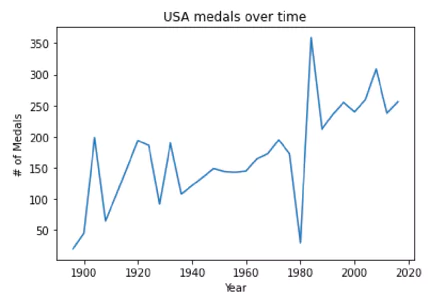
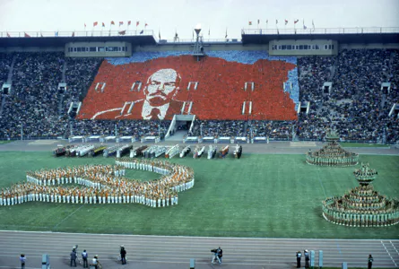

The Boycott
Shown in the plot below is a line chart of medals over time
for the USA.
Due to their boycott of the 1980 Summer Games, there is a
drastic dip on the chart.
It also shows that in response to USA's 1980 boycott, the
Soviet Union and most of the Eastern Bloc boycotted the 1984
games. With their greatest competition absent, the USA
experienced tremendous success in the 1984 games.

"Miracle on Ice"
1980
Summer
The United States boycotted the 1980 Moscow Olympics along
with 64 other countries in protest of the Soviet invasion of
Afghanistan.
The Soviet Union, along with East Germany, won more than
half of all medals.
Winter (fun fact)
Dubbed “the miracle on ice”, the United States hockey team,
composed of amateur and minor league players, toppled the
heavily favored (and previously undefeated) Soviet team.
